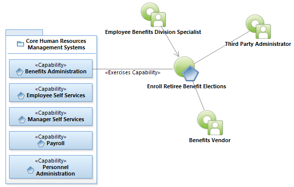
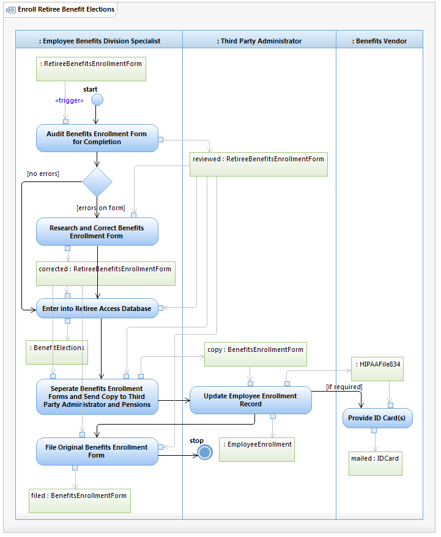

Use Case Model: Enroll Retiree Benefit Elections
Architect: Rob Byrd, Chief Enterprise IT Architect
Date Last Modified: 06/04/2012
User Review: Andrea Glasper, Benefits Specialist
Date: TBD
When a Retiree Benefits Enrollment Form is generated, the information is audited, corrected if required and entered into Retiree Access Database by an Employee Benefits Specialist. A copy is sent to the Third Party Administrator and Pensions to update Retiree Enrollment Record. ID Cards are mailed to retirees when required.
Follow link to Role Definitions

Use Case Model: Enroll Retiree Benefit Elections

Activity Model: Enroll Retiree Benefit Elections